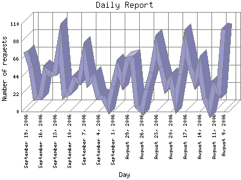

The Daily Report identifies the activity for each day within the reporting period. Remember that one page hit can result in several server requests as the images for each page are loaded.

| Day | Number of requests | Number of page requests | |
|---|---|---|---|
| 1. | August 9, 2006 | 103 | 14 |
| 2. | August 10, 2006 | 24 | 3 |
| 3. | August 11, 2006 | 32 | 11 |
| 4. | August 12, 2006 | 2 | 1 |
| 5. | August 13, 2006 | 17 | 6 |
| 6. | August 14, 2006 | 57 | 10 |
| 7. | August 15, 2006 | 38 | 6 |
| 8. | August 16, 2006 | 57 | 12 |
| 9. | August 17, 2006 | 86 | 12 |
| 10. | August 18, 2006 | 47 | 12 |
| 11. | August 19, 2006 | 13 | 3 |
| 12. | August 20, 2006 | 40 | 9 |
| 13. | August 21, 2006 | 30 | 5 |
| 14. | August 22, 2006 | 56 | 8 |
| 15. | August 23, 2006 | 81 | 4 |
| 16. | August 24, 2006 | 49 | 4 |
| 17. | August 25, 2006 | 28 | 5 |
| 18. | August 26, 2006 | 1 | 1 |
| 19. | August 27, 2006 | 7 | 4 |
| 20. | August 28, 2006 | 66 | 8 |
| 21. | August 29, 2006 | 65 | 12 |
| 22. | August 30, 2006 | 38 | 6 |
| 23. | August 31, 2006 | 55 | 7 |
| 24. | September 1, 2006 | 32 | 4 |
| 25. | September 2, 2006 | 5 | 3 |
| 26. | September 3, 2006 | 17 | 5 |
| 27. | September 4, 2006 | 18 | 4 |
| 28. | September 5, 2006 | 43 | 6 |
| 29. | September 6, 2006 | 36 | 9 |
| 30. | September 7, 2006 | 70 | 9 |
| 31. | September 8, 2006 | 38 | 10 |
| 32. | September 9, 2006 | 41 | 11 |
| 33. | September 10, 2006 | 23 | 7 |
| 34. | September 11, 2006 | 20 | 3 |
| 35. | September 12, 2006 | 86 | 15 |
| 36. | September 13, 2006 | 48 | 6 |
| 37. | September 14, 2006 | 47 | 10 |
| 38. | September 15, 2006 | 52 | 6 |
| 39. | September 16, 2006 | 18 | 3 |
| 40. | September 17, 2006 | 17 | 4 |
| 41. | September 18, 2006 | 56 | 8 |
| 42. | September 19, 2006 | 75 | 14 |
Most active day October 26, 2005 : 45 pages sent.
Daily average: 6.97674418604651 pages sent. 40.3255813953488 requests handled. 424.078 TB bytes served.
This report was generated on September 20, 2006 16:08.
Report time frame October 24, 2005 19:12 to September 19, 2006 18:48.
| Web statistics report produced by: | |
| analog 5.1 | Report Magic for Analog 2.10 |